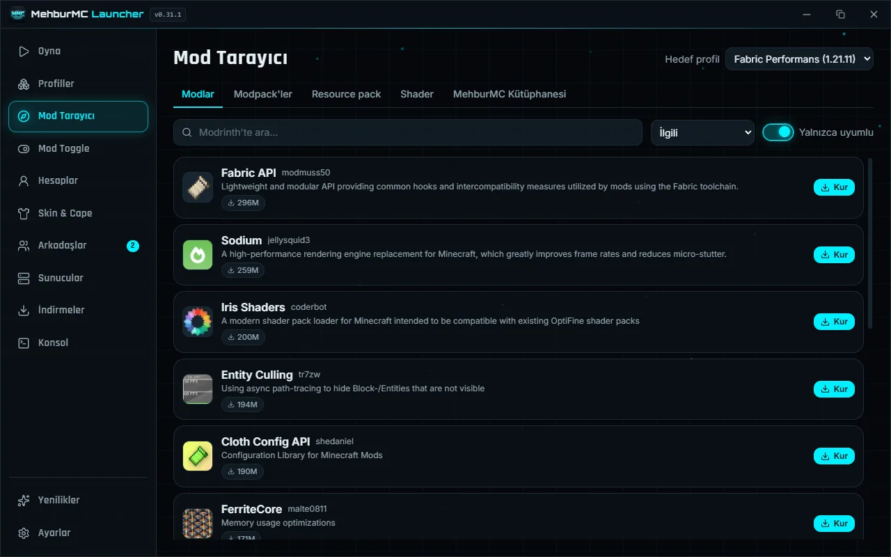
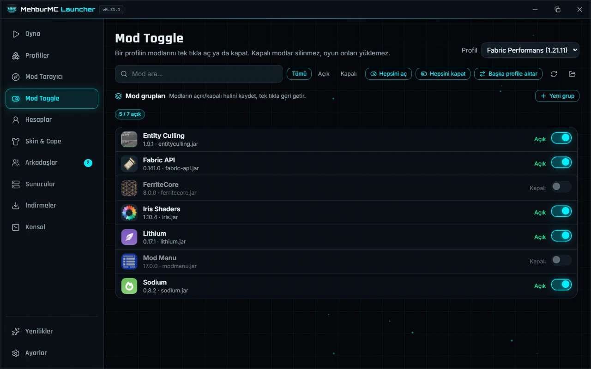
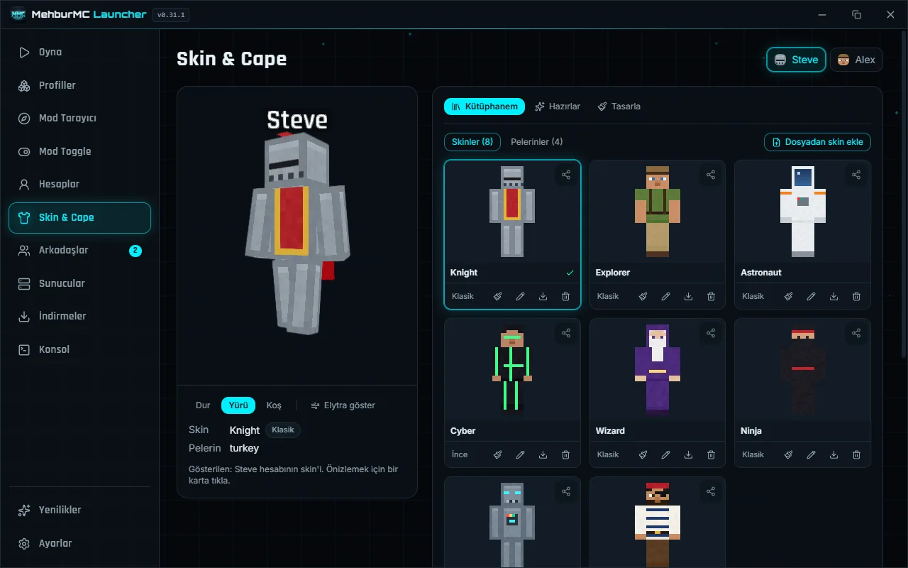
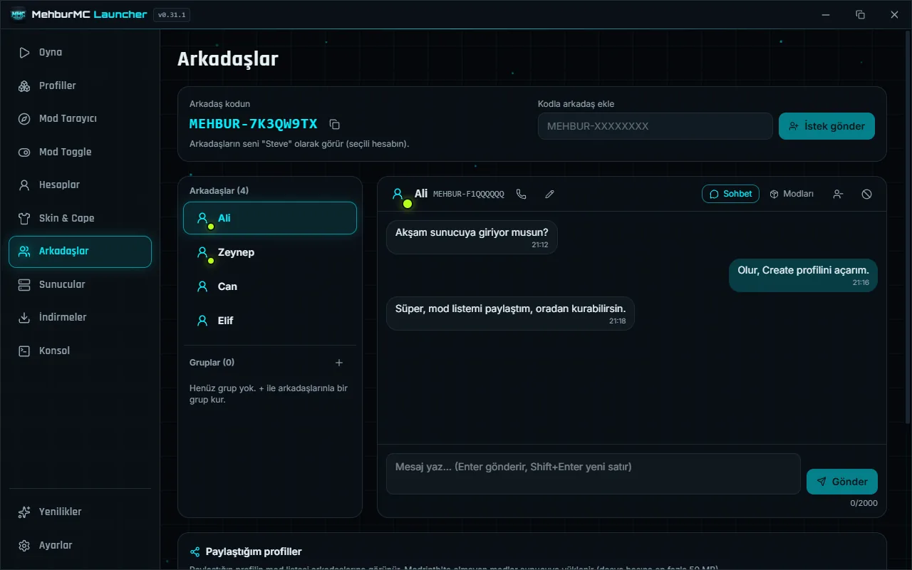

Profiller
Vanilla, Fabric, Quilt, Legacy Fabric, Forge, NeoForge ve OptiFine. Her profilin kendi mods, saves ve config klasörü var.
Hafif ve reklamsız bir Minecraft launcher'ı. Vanilla, Forge, Fabric ve OptiFine'ı tek tıkla kurar; modların, skinlerin ve arkadaşların tek yerde.

MehburMC Launcher, Windows ve Linux için kendi geliştirdiğim hafif, reklamsız ve telemetrisiz bir Minecraft Java Edition launcher'ı. Tauri ile yazıldığı için az RAM kullanır. Modlarını, skinlerini ve arkadaşlarını tek yerden yönetirsin; gereken Java sürümünü kendisi indirip kurar, yeni sürüm çıkınca da kendini günceller.
Vanilla, Fabric, Quilt, Legacy Fabric, Forge, NeoForge ve OptiFine. Her profilin kendi mods, saves ve config klasörü var.
Her Minecraft sürümü için gereken Java'yı (Adoptium Temurin) kendisi indirip kurar; senin uğraşman gerekmez.
Modrinth'te mod, modpack, resource pack ve shader arayıp kurarsın; güncellemeleri görür, .mrpack dosyalarını içe aktarırsın.
Modları tek tıkla aç ya da kapat, mod grupları kur, bir profilin modlarını başka bir profile aktar. Farklı sürüme aktarırken uygun sürümü Modrinth'ten bulur.
Skin ve pelerin kütüphanesi, hazır koleksiyonlar, 3B önizlemeli piksel editörü ve toplulukla paylaşma.
Arkadaş koduyla ekle; mesajlaş, grup sohbeti kur, 16 kişiye kadar sesli ara, ekranını ve mod listeni paylaş.
Favori sunucular, ping ve oyuncu sayısı, tek tıkla katılma. MehburMC Kütüphanesi'nde oyuncuların yüklediği, taranıp onaylanmış mod ve paketler.
Minecraft haberleri, çökme analizi, yöneticilere mesaj yazma, istediğin renkte tema, Türkçe ve İngilizce arayüz, taşınabilir (portable) kullanım.



Ekran görüntülerindeki hesaplar, arkadaşlar ve mesajlar örnek verilerdir.
Dosyanın olduğu klasörde terminal açıp şunu çalıştır. Gereken paketler (libwebkit2gtk-4.1-0, libgtk-3-0, pkexec) otomatik kurulur; sonraki sürümler launcher'ın içinden güncellenir.
sudo apt install ./MehburMC-Launcher_0.34.0_amd64.debKaldırmak için:
sudo apt remove mehbur-mc-launcherİndirdiğin dosyanın benim yayınladığımla birebir aynı olduğunu kontrol etmek için dosyanın bulunduğu klasörde PowerShell'i açıp şu komutu çalıştır:
Get-FileHash .\MehburMCLauncher.exe -Algorithm SHA256Çıkan SHA-256 değeri bununla aynı olmalı:
b8dc5b67fef0098c525f10888c8bb3264eacf66e7cd62e4d5d039b374c5cb1ecLinux'ta .deb dosyası için aynı klasörde terminal açıp şunu çalıştır:
sha256sum MehburMC-Launcher_0.34.0_amd64.debÇıkan SHA-256 değeri bununla aynı olmalı:
6dbe5374efb6969666da156c2b112ba237942c8db5ddc3a9a21faf1fe536c74d